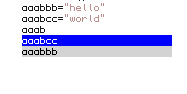
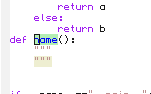
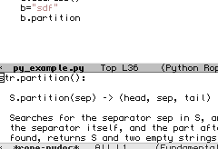

This tutorial will show you how to setup a very convenient python IDE in Emacs. Many ideas in this tutorial came from emacs python wiki and Ryan McGuire Homepage . Many people on #emacs channel of freenode.net provided invaluable help. Freenode is one of the best communities I’ve ever known. It really takes time to combine all kinds of modes together and make them work. so I hope this tutorial could save you some time.
Requirments:
==========================
Software Version:Ubuntu 8.04 Emacs 22.1
Package required: python-mode.el , pymacs0.24 , auto-complete.el, yasnippet.el, rope and ropemacs
From my experience, many emacs packages in Ubuntu repository are out of data. So you’d better download emacs packages directly from Emacs wiki or the homepage of that mode. It not only keeps you from compatibility issues but also gives you extra portability when you move to another machine. Let’s see some details of the final results. Hopefully, these will give you enough anticipation to finish this tutorial.
Features
==========================
Auto completion by auto-complete.el
1. Auto complete variable/ function names within a file. It’s really fast!
2. Complete names in other files or python libraries.
3. code refectoring for more detail
Code expansion by yasnippets
4. templates expansion including class, function, file header and almost anything you want. I use it to generate stander file header and if __name__==”__main__” staff.
Display docstring by rope
5. Online help system.
6. Syntax checking on the fly
Other features are:
Smart Indent, Outdent, and Pair matching, additional to syntactic and semantic highlighting, code folding, instant rename refactoring, mark occurrences
Interactive Python Console
Smart math operator, Add space around operator such as =.+,-,*./ for better readability
…
How to install:
==========================
I assume that you have a .emacs file and .emacs.d directory in your home directory. If you don’t, create them and put this in your .emacs
(add-to-list ‘load-path “~/.emacs.d/”)
Dotemacs is a very good site for newbies. If you dont’ have .emacs, you want to go there and look for some basic settings
==========================
1.Download auto-completion.el to .emacs.d and put the following line in .emacs
1 | (require 'auto-complete) |
2 | (global-auto-complete-mode t) |
2. Download yasnippet to .emacs.d and edit .emacs
3 | (yas/load-directory "~/.emacs.d/snippets") |
3. Download python-mode.el and put it in .emacs.d, we will use it later.
4. Setup Rope, Ropemacs and Pymacs.
We need the latest development version of Rope and Ropemacs. Otherwise, emacs can not find the rope-completions function.
I just copy’n paste from Ryan’s website. You can find the original post here
sudo apt-get install mercurial
mkdir /tmp/rope && cd /tmp/rope
hg clone http://bitbucket.org/agr/rope
hg clone http://bitbucket.org/agr/ropemacs
hg clone http://bitbucket.org/agr/ropemode
sudo easy_install rope
ln -s ../ropemode/ropemode ropemacs/
sudo easy_install ropemacs
5. Install pyflakes for auto syntax check
sudo apt-get install pyflakes
6. Put everything together
Create init_python.el in your .emacs.d. Add following content
001 | (autoload 'python-mode "python-mode" "Python Mode." t) |
002 | (add-to-list 'auto-mode-alist '("\\.py\\'" . python-mode)) |
003 | (add-to-list 'interpreter-mode-alist '("python" . python-mode)) |
004 | (require 'python-mode) |
005 | (add-hook 'python-mode-hook |
007 | (set-variable 'py-indent-offset 4) |
008 | ;(set-variable 'py-smart-indentation nil) |
009 | (set-variable 'indent-tabs-mode nil) |
010 | (define-key py-mode-map (kbd "RET") 'newline-and-indent) |
011 | ;(define-key py-mode-map [tab] 'yas/expand) |
012 | ;(setq yas/after-exit-snippet-hook 'indent-according-to-mode) |
013 | (smart-operator-mode-on) |
016 | (autoload 'pymacs-apply "pymacs") |
017 | (autoload 'pymacs-call "pymacs") |
018 | (autoload 'pymacs-eval "pymacs" nil t) |
019 | (autoload 'pymacs-exec "pymacs" nil t) |
020 | (autoload 'pymacs-load "pymacs" nil t) |
021 | ;;(eval-after-load "pymacs" |
022 | ;; '(add-to-list 'pymacs-load-path YOUR-PYMACS-DIRECTORY")) |
023 | (pymacs-load "ropemacs" "rope-") |
024 | (setq ropemacs-enable-autoimport t) |
025 | ;;;;;;;;;;;;;;;;;;;;;;;;;;;;;;;;;;;;;;;;;;;;;;;;;;;;;;;;;;;;;;;;;;;;;; |
030 | ;;; all with AutoComplete.el |
031 | ;;;;;;;;;;;;;;;;;;;;;;;;;;;;;;;;;;;;;;;;;;;;;;;;;;;;;;;;;;;;;;;;;;;;;; |
032 | (defun prefix-list-elements (list prefix) |
035 | (dolist (element list value) |
036 | (setq value (cons (format "%s%s" prefix element) value)))))) |
037 | (defvar ac-source-rope |
040 | (prefix-list-elements (rope-completions) ac-target)))) |
042 | (defun ac-python-find () |
043 | "Python `ac-find-function'." |
045 | (let ((symbol (car-safe (bounds-of-thing-at-point 'symbol)))) |
047 | (if (string= "." (buffer-substring (- (point) 1) (point))) |
051 | (defun ac-python-candidate () |
052 | "Python `ac-candidates-function'" |
054 | (dolist (source ac-sources) |
056 | (setq source (symbol-value source))) |
057 | (let* ((ac-limit (or (cdr-safe (assq 'limit source)) ac-limit)) |
058 | (requires (cdr-safe (assq 'requires source))) |
060 | (if (or (null requires) |
061 | (>= (length ac-target) requires)) |
064 | (mapcar (lambda (candidate) |
065 | (propertize candidate 'source source)) |
066 | (funcall (cdr (assq 'candidates source))))))) |
067 | (if (and (> ac-limit 1) |
068 | (> (length cand) ac-limit)) |
069 | (setcdr (nthcdr (1- ac-limit) cand) nil)) |
070 | (setq candidates (append candidates cand)))) |
071 | (delete-dups candidates))) |
072 | (add-hook 'python-mode-hook |
074 | (auto-complete-mode 1) |
075 | (set (make-local-variable 'ac-sources) |
076 | (append ac-sources '(ac-source-rope) '(ac-source-yasnippet))) |
077 | (set (make-local-variable 'ac-find-function) 'ac-python-find) |
078 | (set (make-local-variable 'ac-candidate-function) 'ac-python-candidate) |
079 | (set (make-local-variable 'ac-auto-start) nil))) |
080 | ;;Ryan's python specific tab completion |
081 | (defun ryan-python-tab () |
083 | ; 1) Do a yasnippet expansion |
084 | ; 2) Do a Rope code completion |
087 | (if (eql (ac-start) 0) |
088 | (indent-for-tab-command))) |
089 | (defadvice ac-start (before advice-turn-on-auto-start activate) |
090 | (set (make-local-variable 'ac-auto-start) t)) |
091 | (defadvice ac-cleanup (after advice-turn-off-auto-start activate) |
092 | (set (make-local-variable 'ac-auto-start) nil)) |
093 | (define-key py-mode-map "\t" 'ryan-python-tab) |
094 | ;;;;;;;;;;;;;;;;;;;;;;;;;;;;;;;;;;;;;;;;;;;;;;;;;;;;;;;;;;;;;;;;;;;;;; |
095 | ;;; End Auto Completion |
096 | ;;;;;;;;;;;;;;;;;;;;;;;;;;;;;;;;;;;;;;;;;;;;;;;;;;;;;;;;;;;;;;;;;;;;;; |
097 | ;; Auto Syntax Error Hightlight |
098 | (when (load "flymake" t) |
099 | (defun flymake-pyflakes-init () |
100 | (let* ((temp-file (flymake-init-create-temp-buffer-copy |
101 | 'flymake-create-temp-inplace)) |
102 | (local-file (file-relative-name |
104 | (file-name-directory buffer-file-name)))) |
105 | (list "pyflakes" (list local-file)))) |
106 | (add-to-list 'flymake-allowed-file-name-masks |
107 | '("\\.py\\'" flymake-pyflakes-init))) |
108 | (add-hook 'find-file-hook 'flymake-find-file-hook) |
109 | (provide 'init_python) |
7.Add (load-library “init_python”) in your .emacs file.
How to use it?
==========================
Use Tab when you want
1. Expand the code. ex. tab after “class” would triger class expansion
2. Complete code.
3. Tab
C-c d Display doc string
C-c c Run file in python
C-h m Show more key binding
This entry was posted on January 30, 2009 at 1:30 am and is filed under Emacs.
You can follow any responses to this entry through the RSS 2.0 feed.
You can leave a response, or trackback from your own site.


{kind=link}
{kind=link}
{kind=link}
{kind=link}
NewtoPython said
I had a similar problem with this error-message:
Narren said
Tried this setup for emacs 23 under ubuntu 10.04. It’s not quite working for me.
When I type something like:
import syssys.[TAB]
It does not show auto-complete menu and message appears:
setq: Symbol’s value as variable is void: ac-source-yasnippet
I’ve checked rope, M-/ works as expected.
Also, I can’t indent by hitting TAB at new line.
Any suggestions?
hide1713 said
This post is quite old and I can’t guarantee everything would work now. Make sure you have yasnippet installed and loaded. You can simply disable the smart TAB and or bind yasnippet to different keys.
hide1713 said
Check your yasnippet again and make sure you load yasnippet in your .emacs file
duanedesign said
I had the same error others are getting:
Symbol’s value as variable is void: ‘auto-complete
The how-to has a small typo.
(require ‘auto-complete)
should be:
(require ‘auto-complete)
Hope that helps some people.
Great guide overall.
网域黑城 – tiger's notes » Blog Archive » 配置Emacs下的Python开发环境 - 技术仅仅是一个工具，是你在人生一个阶段生存的工具，你可以一辈子喜欢它，但最好不要一辈子靠它生存。 said
[...] 在Linux论坛上总有人问Python用什么IDE比较好，然后总会有人回答说Emacs。最近开始学Python，也花了点时间研究怎么配置Emacs，发现没有想象中的那么麻烦。这篇文章大致上来自于Lei Chen博客文章的翻译，完成以后的Emacs具有以下特性: [...]
Julie Bohman said
Cool Thanks for your article. I am starting django and this got me straight.
Miles Melder said
Unbelievably good info on this site I am grateful to have found it, I would highly recommend it for anyone looking for solutions to their problems.
Simon said
smart-operator-mode is in the latest smart-operator.el, found at:
The one at the EmacsWiki is a bit old (like 4 years).
Fena said
Humm, I’ve loved this setup but I’m having a little problem with it. When I’m in the middle of a Yas expansion auto-complete will only work if I use enter. Is there any way to configure auto-complete TAB to work inside the Yas expansion?
Amir Saffari’s Website » PyFlakes-Flymake for Python Programming in Emacs said
[...] that I found this setting in this page as a rather more complete setup. However, I found out that for my taste the PyFlakes and the [...]
Matthew Strand said
Thanks for posting this. It took me forever, but I finally got it setup. Here are some tips:
1. Rob C’s reply to comment #4 was required.
2. (smart-operator-mode-on) needed this file:
http://xwl.appspot.com/ref/smart-operator.el
and then (require ‘smart-operator) near the top in .emacs
Matthew Strand said
Well I see now that the comments add to the top so “Comment 4″ is meaningless. It was RobC’s reply to Rutku regarding auto-complete-config.el.
michellejw said
Thanks – I used the heck out of this tutorial. It was very helpful!
Emacs and Python « How did I do that again? said
[...] font. Now to make it do Python stuff. I’m following a tutorial that can be found here. I’m starting off by downloading several packages: python-mode.el , pymacs0.24 , [...]
配置Emacs下的Python开发环境 : 没头苍蝇的窝 said
[...] 在Linux论坛上总有人问Python用什么IDE比较好，然后总会有人回答说Emacs。最近开始学Python，也花了点时间研究怎么配置Emacs，发现没有想象中的那么麻烦。这篇文章大致上来自于Lei Chen博客文章的翻译，完成以后的Emacs具有以下特性: [...]
Rutku said
Hi, thank you for article,
I don’t work Tab . This output :
Symbol’s value as variable is void: ac-source-yasnippet
Rob C said
Try adding this to ~/.emacs.d/: auto-complete-config.el from github (http://github.com/m2ym/auto-complete/raw/master/auto-complete-config.el)
Then just out (require ‘auto-complete-config) in your ~/.emacs file.
Got rid of this error for me. I still cannot get tab to actually indent anything though :(
too said
I have this problem too.
That’s because we are using AutoComplete.el version 0.2.0, not the old one 0.1.0…
Joey Liu said
it works for me, but only one question
(if (eql (ac-start) 0)
(indent-for-tab-command))
it seems that ac-start will never equal to 0, so indent-for-tab-command will never run.
i’m using auto-complete.el 0.2.0
Walt said
This might be a stupid question, but I don´t know elisp:
On line 41, where it says “Source for Rope”, are we supposed to fill in the path to Rope, or is it just a comment? Seems to be working quite well for me right now at least. Thansk for a good post.
catonano said
Sorry ro bother: it worked
I just mis-copied the snippet, look:
(require ‘auto-complete)
(global-auto-complete-mode t)
;;(require ‘auto-complete)
;;(global-auto-complete-mode t)
‘ and ‘ are different !
Bye
Cato
catonano said
Hi,
I’m a total Emacs newbie, I’m on Ubuntu 8.10.
I copied
(require ‘auto-complete)
(global-auto-complete-mode t)
in my .emacs file and got a message on the *Messages* buffer:
An error has occurred while loading `/home/catonano/.emacs’:
Symbol’s value as variable is void: ‘auto-complete
Thanks
ap said
A comment from http://www.enigmacurry.com/2009/01/21/autocompleteel-python-code-completion-in-emacs/ says that setting robe project root folder might be the problem.what does robe root folder exactly mean.Any advice on that. Also how do i set emacs to point to my python path. i am a newbie with emacs
hide1713 said
I am not sure about the problem. I didn’t set the rope project root folder variable because I have projects in different location. Emacs will ask you for root folder name the first time when you try to complete a name.
I don’t see any reason for doing that.
ap said
everything is working but when i do something like import os.path the screen freezes for long period.any suggestion
hide1713 said
I am not sure what is happening on your machine. You need provide me more information. Maybe you should try compile those .el file to byte code.
kakarotoBR said
Hello, i’m using emacs-snapshot on ubuntu 8.10 and everything is working except C-c C-c Ret gives the following error:
Symbol’s function definition is void: smart-operator-mode-on
But smart-operator.el is in my load path and (require ‘smart-operator) in my .emacs. Any help would be much appreciated
hide1713 said
Your emacs can not find smart-operator-mode-on because this function is not exists. I didn’t find smart-operator-mode-on function in my smart-operator.el. You can toggle the smart-operator by calling smart-operator-mode function.